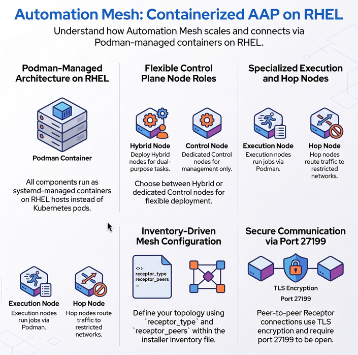

Automation Mesh on Containerized AAP
Automation Mesh in a containerized deployment uses the same fundamental architecture as other deployment types — peer-to-peer Receptor connections, TLS encryption, and a Control/Execution Plane separation — but all components run as podman-managed containers on RHEL hosts rather than as Kubernetes pods or traditional RPM services.

Control Plane in a Containerized Deployment
The Control Plane in a containerized deployment consists of Hybrid nodes and Control nodes, just as in a VM/RPM deployment. These nodes run the persistent AAP services: the web server, task dispatcher, project updates, and management jobs.
-
Hybrid nodes (default): Perform both control functions (managing jobs, web UI) and execution functions (running playbooks). This is the default
node_typefor nodes in the[automationcontroller]group. -
Control nodes: Run project and inventory updates and system jobs only. Execution capabilities are disabled. Set
node_type=controlto configure a control-only node.
| Unlike operator-based deployments, containerized deployments do support Hybrid and Control nodes. There are no Container Groups in a containerized deployment. |
Execution Plane in a Containerized Deployment
The Execution Plane in a containerized deployment consists of execution and hop nodes. These run as containers on RHEL hosts:
-
Execution nodes: Run jobs using
ansible-runnerwithpodmanisolation. Configured in the[execution_nodes]group withreceptor_type=execution(the default). -
Hop nodes: Route Receptor traffic between nodes. Configured with
receptor_type=hop. Hop nodes cannot execute automation.
In a containerized deployment, use receptor_type instead of node_type to set execution vs. hop. node_type was used in RPM-based deployments only.
|
Peers in a Containerized Deployment
Peer relationships are defined in the installer inventory using receptor_peers. The value must be a comma-separated list of hostnames — not inventory group names. By default, nodes in the [execution_nodes] group are automatically peered to nodes in the [automationcontroller] group. You can override this with receptor_peers.
Key Differences from OCP Deployment
| Feature | Containerized | OCP (Operator-based) |
|---|---|---|
Control Plane nodes |
Hybrid and Control nodes (containers on RHEL) |
Kubernetes pods (no hybrid/control nodes) |
Execution mechanism |
|
Container Groups (ephemeral pods) or remote RHEL execution nodes |
Node type config |
|
AAP UI Instances page |
Peer config |
|
AAP UI (Peers from control nodes toggle) |
Scaling |
Re-run installer with updated inventory |
Add/remove from UI without re-running installer |